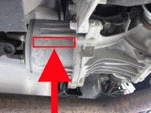

Clutch calibration data writing
This function is used when:
Installation of programmable control module for 4WD control unit has not been completed.
Component for rear differential are replaced.
Both 4WD control unit and component for rear differential are replaced simultaneously.
Note:
You must note the number on the side of the clutch (16 digits), these will be used in the function (see picture).

Test conditions:
Ignition on, engine off.
Procedure:
Start the function.
A dialogue box is shown with the instruction to enter the code (16 digits).
If you want to program the clutch press "OK", otherwise cancel.
The function is done.